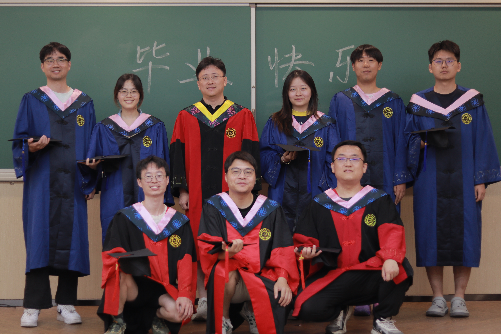
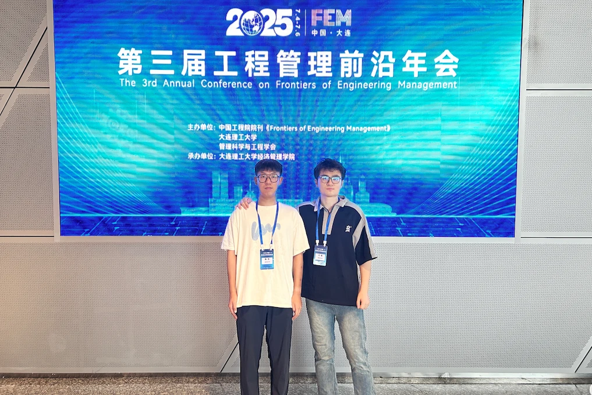
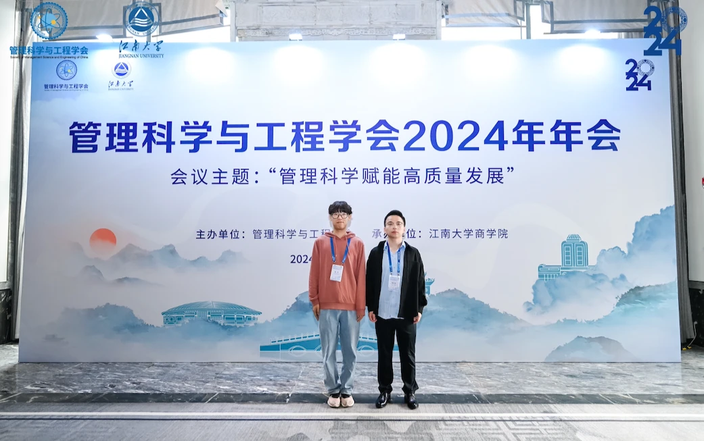

Long Chen
Welcome to Long's Homepage!
I am a first-year Ph.D. student in Industrial Engineering at Northeastern University, advised by Prof. Tugce Martagan. I am affiliated with the Department of Mechanical and Industrial Engineering, College of Engineering. Before joining Northeastern, I earned my master's degree in Management Science and Engineering from the University of Science and Technology of China (USTC) under the supervision of Prof. Lindong Liu, and my bachelor's degree in Industrial Engineering from Jiangnan University.
I work on operations research for healthcare. I am interested in combining integer programming, machine learning, and statistics to support resource allocation and decision-making under uncertainty. My goal is to connect methodological advances with real-world needs, making healthcare systems more efficient, equitable, and resilient, with broader applications in emergency management.
News
🎓 Successfully defended my M.Phil. thesis at USTC.
🎉 Thrilled to announce that I will be joining Northeastern University in Boston as a PhD student in Industrial Engineering, advised by Prof. Tugce Martagan!
📖 Served as Teaching Assistant for Applied Statistical Methods (Spring 2026) at USTC.
Show older news
📖 Served as Teaching Assistant for Large Scale Integer Programming and Reinforcement Learning: Basics and State-of-the-Art at USTC.
Gallery





